Tagajo
Tagajo · Miyagi
Tagajo
Highlighted on the Miyagi map.
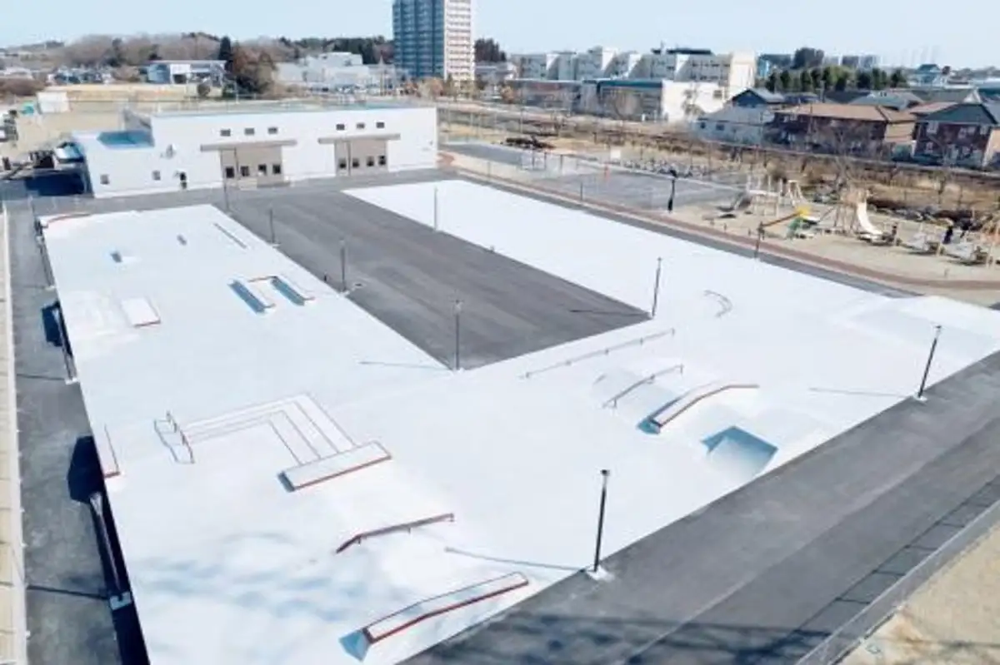
Stay
ホテルルートイン多賀城駅東
Hoteruruutoin Tagajou Eki Higashi
薬湯の宿 ホテルキャッスルプラザ多賀城(BBHホテルグループ)
Yakuyu No Yado Hoterukyassurupuraza Tagajou (bbh Hoteruguruupu )
スマイルホテル仙台多賀城
Sumairuhoteru Sendai Tagajou
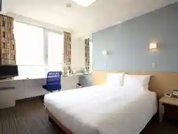
コンビニＡｙｅｒｓＲｏｃｋホテル仙台多賀城
Konbini A Y E R S R O C K Hotel Sendai Tagajou
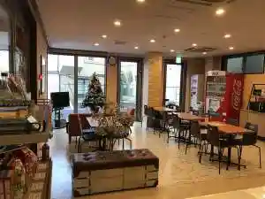
Tabist マイルーム多賀城
Tabist
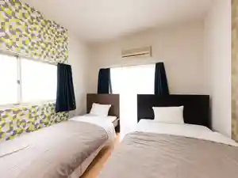
備長炭の湯 小野屋ホテル
Binchou Sumi No Yu Ono Ya Hotel
Dining
ムラタ
Murata
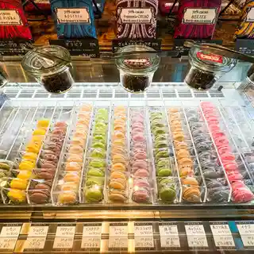
PIZZERIA DB
PIZZERIA DB
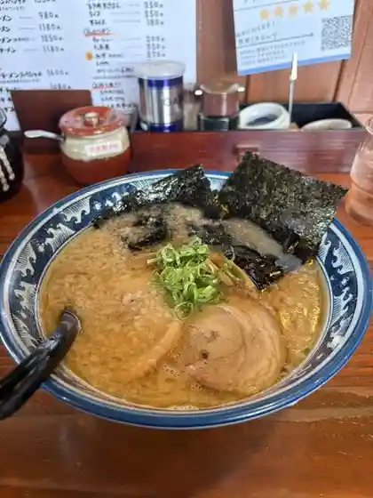
蔵
Kura
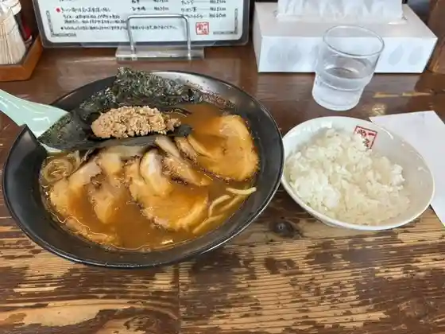
一品堂
Ippin Dou
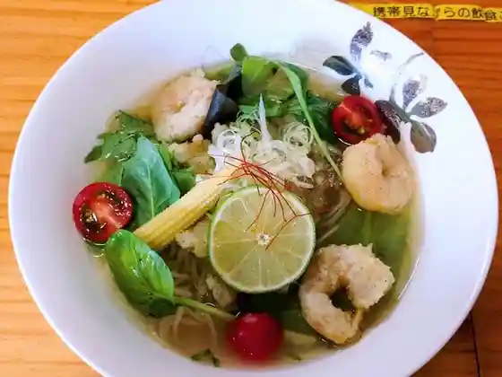
ラーメン あんず
Raamen Anzu
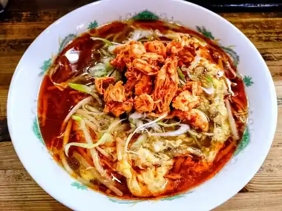
らー麺味噌やす
Raa Men Miso Yasu
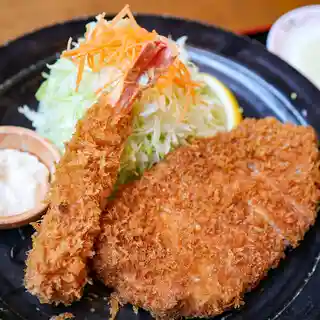
とんかつ一代
Tonkatsu Ichidai
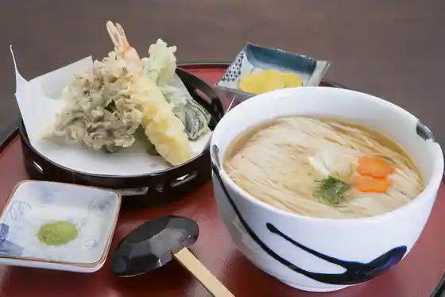
瀧さわ家 多賀城店
Taki Sawa Ie Tagajou Mise
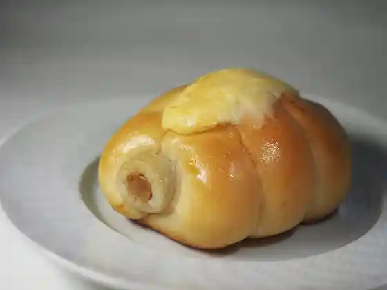
グリーンライフコーヒーロースター
Guriinraifukoohiiroosutaa
長町ラーメン 多賀城店
Nagamachi Raamen Tagajou Mise
ラーメンビリー 多賀城店
Raamenbirii Tagajou Mise
食堂大郷
Shokudo Oosato
明華園
Mei Hanazono
むつごろう
Mutsugorou
とんこつ豚らーめん 飛燕
Tonkotsu Buta Raamen Hien
食事処 海幸
Shokuji Tokoro Umisachi
ラーメン 鶏華
Raamen Niwatori Hana
満州園 多賀城店
Manshuu Sono Tagajou Mise
そばの神田 町前屋本店
Sobano Kanda Machi Maeya Honten
東日本ラーメン研究所
Higashinihon Raamen Kenkyuusho
そば 寿ゞ喜支店
そば 寿ゞ喜支店
油そば はてな
Abura Soba Hatena
やわらかとんかつ かつ庄 多賀城本店
Yawarakatonkatsu Katsu Shou Tagajou Honten
とんちん館
Tonchin Kan
たんや善治郎 多賀城店
Tanya Zenjirou Tagajou Mise
さるしな
Sarushina
いわい食堂
Iwai Shokudo
三島屋
Mishima Ya
ん寿司
N Sushi
牛タン焼肉善治郎 多賀城駅店
Gyuutan Yakiniku Zenjirou Tagajou Eki Mise
Ko-an
Ko-an
喰囍炒
Shoku
あかんたれ
Akantare
洋菓子の店ティファニー
Yougashi No Mise Teifanii
東龍
Touryuu
アンティークカフェ オールドタイム
Anteiikukafe Oorudotaimu
たんや 善治郎 多賀城駅店
Tanya Zenjirou Tagajou Eki Mise
まぼろし海鮮 陸奥
Maboroshi Kaisen Michinoku
鳥善
Tori Zen
&Sun
&Sun
Ten coffee and bake
Ten coffee and bake
ファソン・ドゥ・ドイ
ファソン・ドゥ・ドイ
和食の小島
Washoku No Kojima
町田商店 多賀城店
Machida Shouten Tagajou Mise
SARU CURRY
SARU CURRY
米粉パン トゥット
Beifun Pan Toutto
ミラックマツヤ
Mirakkumatsuya
イタリア食堂Pino
Itaria Shokudo Pino
だいご寿司
Daigo Sushi
ボーヴル
Boovuru
Fiddle
Fiddle
麺匠 大黒 多賀城店
Men Takumi Daikoku Tagajou Mise
憩いの喰う感 麺恋
Ikoi No Kuu Kan Men Koi
すしの貴伸
Sushino Takashi Shin
城伸寿司
Shiro Shin Sushi
プチトリアノン 多賀城店
Puchitorianon Tagajou Mise
菓子屋 糸
Kashiya Ito
牛たん炭焼き 利久 多賀城店
Ushi Tan Sumiyaki Ki Toshihisa Tagajou Mise
焼肉・冷麺ヤマト 多賀城店
焼肉・冷麺ヤマト 多賀城店
インドレストラン ガンジー
Indoresutoran Ganjii
一歩
Ippo
食道苑
Shokudo En
ピュイダムール
Pyuidamuuru
多賀城亀喜寿司
Tagajou Kame Kiju Tsukasa
焼肉 明月苑 多賀城店
Yakiniku Meigetsu En Tagajou Mise
ホテルキャッスルプラザ 多賀城
Hoterukyassurupuraza Tagajou
カサン
Kasan
和食遊膳 縁楽
Washoku Yuu Zen Heri Raku
いろは亭 多賀城店
Iroha Tei Tagajou Mise
プラージュ
Puraaju
うなぎ山ざき
Unagi Yama Zaki
フミキリCAFE
CAFE
3FLAVOR CURRY
3FLAVOR CURRY
軽食 ひまわり
Keishoku Himawari
自家製中華そば つむぎ
Jikasei Chuuka Soba Tsumugi
よしつね 多賀城店
Yoshitsune Tagajou Mise
PARAGONIAN
PARAGONIAN
伊藤商店 仙台港店
Itou Shouten Sendaikou Mise
本格遠赤焙煎珈琲 まめ福
Honkaku Enseki Baisen Koohii Mame Fuku
中華料理 峰
Chuukaryouri Mine
湯田
Yuda
韓国食堂
Kankoku Shokudo
末広庵
Suehiro Iori
イタリア食堂 アッラミア
Itaria Shokudo Arramia
ノン・ノン
ノン・ノン
ダルバール 多賀城店
Darubaaru Tagajou Mise
とんちゃん亭
Tonchan Tei
ハッピーランチ
Happiiranchi
サンホテル多賀城
Sanhoteru Tagajou
餃子の王将 多賀城店
Gyouza No Oushou Tagajou Mise
大衆食堂 半田屋 多賀城店
Taishuushokudou Handa Ya Tagajou Mise
スターバックスコーヒー 蔦屋書店多賀城市図書館店
Sutaabakkusukoohii Tsutaya Shoten Tagajoushi Toshokan Mise
喜久水庵 多賀城本店
Yoshihisa Mizu Iori Tagajou Honten
ホルモンゆうちゃん
Horumon Yuuchan
からあげ一歩 多賀城駅前店
Karaage Ippo Tagajou Ekimae Mise
居酒屋えん
Izakaya En
炭火焼鳥いたどり 多賀城店
Sumibi Yakitori Itadori Tagajou Mise
はなぶ～
Hanabu ~
ひよの
Hiyono
とりふじ 大代店
Torifuji Dai Dai Mise
山形肉そば 琥珀
Yamagata Niku Soba Kohaku
LAWSON 多賀城山王店
LAWSON
LAWSON 多賀城中央三丁目店
Lawson Tagajou Chuuou Sanchoume Mise
大志軒 多賀城店
Taishi Ken Tagajou Mise
びっくりドンキー 多賀城店
Bikkuri Donkii Tagajou Mise
うまい鮨勘 ゆとろぎ 多賀城店
Umai Sushi Kan Yutorogi Tagajou Mise
焼肉冷麺やまなか家 多賀城店
Yakiniku Reimen Yamanaka Ie Tagajou Mise
こむかい
Komukai
ホテルルートイン 仙台港北インター
Hoteruruutoin Sendaikou Kita Intaa
どんぶりや
Donburiya
焼肉 吉田屋
Yakiniku Yoshidaya
つがるの味っこ な・ど・わ
つがるの味っこ な・ど・わ
麗苑
Rei En
生鮮館多賀城 びっくり市
Seisen Kan Tagajou Bikkuri Shi
ささはら
Sasahara
丸源ラーメン 多賀城店
Maru Gen Raamen Tagajou Mise
スシロー イオン多賀城店
Sushiroo Ion Tagajou Mise
珈琲館 多賀城店
Koohii Kan Tagajou Mise
蔵八ラーメン亭 多賀城高橋店
Kura Hachi Raamen Tei Tagajou Takahashi Mise
ドンクエディテ JR多賀城駅店
Donkuedite Jr Tagajou Eki Mise
さかなの茄子屋
Sakanano Nasu Ya
多幸
Takou
和風ダイニング桜木
Wafuu Dainingu Sakuragi
タカ櫻
Taka Sakura
銀鱗
Ginrin
ホテルルートイン 多賀城駅東
Hoteruruutoin Tagajou Eki Higashi
一松寿司
Ichimatsu Sushi
ケムリノアブサン
Kemurinoabusan
スマイルホテル 仙台多賀城
Sumairuhoteru Sendai Tagajou
Sweet Season ririo
Sweet Season ririo
ムジゲ
Mujige
TAGAJO CENTRAL PARK COFFEE
TAGAJO CENTRAL PARK COFFEE
古代米屋レストラン グリーンゲイブル
Kodai Komeya Resutoran Guriingeiburu
大衆酒場あそびや
Taishuu Sakaba Asobiya
快活CLUB 多賀城店
CLUB
みやもとワッフル
Miyamoto Waffuru
呑み喰い処 呑喜
Nomikui Tokoro Don Ki
ZUNDA ZUNDA FACTORY 多賀城店
ZUNDA ZUNDA FACTORY
かつや 多賀城店
Katsuya Tagajou Mise
寧々家 多賀城店
Nei (kurikaesi) Ie Tagajou Mise
サイゼリヤ イオン多賀城店
Saizeriya Ion Tagajou Mise
ふるさと
Furusato
マクドナルド 多賀城店
Makudonarudo Tagajou Mise
ミスタードーナツ イオン多賀城ショップ
Misutaadoonatsu Ion Tagajou Shoppu
吉野家 45号線多賀城八幡店
Yoshinoya 45 Gousen Tagajou Hachiman Mise
とろり天使のわらびもち 多賀城駅前店
Torori Tenshi Nowarabimochi Tagajou Ekimae Mise
和歌珈琲
Waka Koohii
炭火旬彩 いちゃりば
Sumibi Jun Sai Ichariba
五十集屋
Gojuu Shuu Ya
小波や
Konami Ya
花京院市場 JR多賀城駅店
Kakyouin Shijou Jr Tagajou Eki Mise
イオン 多賀城店
Ion Tagajou Mise
海鮮居酒家 和み家
Kaisen Kyo Shuka Nagomi Ie
梅月堂
Baigetsudou
ルイパパ
Ruipapa
LAWSON 多賀城八幡二丁目店
Lawson Tagajou Hachiman Nichoume Mise
クレイジーミートファクトリー
Kureijiimiitofakutorii
サンロード 多賀城ヤマザワ店
Sanroodo Tagajou Yamazawa Mise
無印良品 イオン多賀城店
Mujirushiryouhin Ion Tagajou Mise
鳥清 多賀城店
Tori Kiyoshi Tagajou Mise
蜂谷商店
Hachiya Shouten
ヨイトマケ真
Yoitomake Makoto
パン工房 アンジュール みやぎ生協高砂店
Pan Koubou Anjuuru Miyagi Seikyou Takasago Mise
銀鱗
Ginrin
うおせい
Uosei
菓匠 榮太楼 みやぎ生協多賀城店
Kashou Eita Rou Miyagi Seikyou Tagajou Mise
すずこう
Suzukou
ビッグボーイ 多賀城町前店
Biggubooi Tagajou Machi Mae Mise
ケンタッキーフライドチキン イオン多賀城店
Kentakkiifuraidochikin Ion Tagajou Mise
極楽湯 多賀城店
Gokuraku Yu Tagajou Mise
げんこつ屋
Genkotsu Ya
和～ちゃんち
Wa ~ Chanchi
Ramen HONE LABO 多賀城下馬店
Ramen HONE LABO
町前ホルモンハレルヤ
Machi Mae Horumonhareruya
石垣精肉店
Ishigaki Seinikuten
弁当 桜
Bentou Sakura
榮太楼 多賀城桜木店
Eita Rou Tagajou Sakuragi Mise
藤寿し
Fuji Hisashi Shi
日本ワインバル サンスーシィ
Nippon Wainbaru Sansuushii
Bookcafe SAFARI
Bookcafe SAFARI
ありがとぉ
Arigatoo
Gyoza Garden
Gyoza Garden
キャサズ
Kyasazu
いっしょう
Isshou
ゆ処悠々
Yu Tokoro Yuuyuu
さくら
Sakura
天のKitchen
Kitchen
つばさくらぶ
Tsubasakurabu
幸楽苑 多賀城店
Kouraku En Tagajou Mise
牛角 多賀城店
Gyuukaku Tagajou Mise
カルビ大将 多賀城店
Karubi Taishou Tagajou Mise
すき家 23号多賀城町前店
Suki Ie 23 Gou Tagajou Machi Mae Mise
モスバーガー イオン多賀城店
Mosubaagaa Ion Tagajou Mise
しゃぶしゃぶ温野菜 多賀城店
Shabushabu Onyasai Tagajou Mise
和風レストランまるまつ 城南店
Wafuu Resutoran Marumatsu Jounan Mise
魚民 多賀城店
Uotami Tagajou Mise
赤から 多賀城店
Akaka Ra Tagajou Mise
菓匠三全 イオン多賀城店
Kashousanzen Ion Tagajou Mise
銀座コージーコーナー イオン多賀城店
Ginza Koojiikoonaa Ion Tagajou Mise
仙台ホルモン・焼肉 ときわ亭 多賀城店
仙台ホルモン・焼肉 ときわ亭 多賀城店
シャトレーゼ 多賀城店
Shatoreeze Tagajou Mise
ほっともっと 多賀城中央店
Hottomotto Tagajou Chuuou Mise
やきとり 大吉 多賀城店
Yakitori Daikichi Tagajou Mise
ラグノオ ヤマザワ多賀城店
Ragunoo Yamazawa Tagajou Mise
つつみ屋 多賀城店
Tsutsumi Ya Tagajou Mise
パン工場 ザ・ビッグ多賀城鶴ヶ谷店
パン工場 ザ・ビッグ多賀城鶴ヶ谷店
やきとり 大吉 多賀城高崎店
Yakitori Daikichi Tagajou Takasaki Mise
しゃぶ葉 多賀城店
Shabu Ha Tagajou Mise
ほっともっと 多賀城高橋店
Hottomotto Tagajou Takahashi Mise
ラルカンシェール みやぎ生協大代店
Rarukanshieeru Miyagi Seikyou Dai Dai Mise
不二家 みやぎ生協大代店
Fujiya Miyagi Seikyou Dai Dai Mise
ピザハット 国府多賀城店
Pizahatto Kou Tagajou Mise
パン工場 イオン多賀城店
Pan Koujou Ion Tagajou Mise
寓
Guu
かまぼこの鐘崎 イオン多賀城店
Kamabokono Kanezaki Ion Tagajou Mise
COPAL みやぎ生協大代店
Copal Miyagi Seikyou Dai Dai Mise
イザカヤ チャチャ
Izakaya Chacha
コロッケのころっ家 多賀城店
Korokke Nokorotsu Ie Tagajou Mise
つつみ屋 レインボー
Tsutsumi Ya Reinboo
ダイニングバー トゥー
Dainingubaa Touu
居酒屋 とまり木
Izakaya Tomari Ki
ちょっと寄り道 ほほえみ
Chotto Yorimichi Hohoemi
いとうや
Itouya
幸楽苑のからあげ家 多賀城店
Kouraku En Nokaraage Ie Tagajou Mise
四季菜 キッチン
Shikisai Kitchin
串まろ
Kushi Maro
平禄寿司 多賀城西店
Taira Roku Sushi Tagajou Nishi Mise
BEANS KITCHEN
BEANS KITCHEN
みんなの食堂
Minnano Shokudo
伊達なおふくろ弁当 多賀城店
Date Naofukuro Bentou Tagajou Mise
養老乃瀧 多賀城町前店
Yourou No Taki Tagajou Machi Mae Mise
こんび
Konbi
サリーズ
Sariizu
ミッキー
Mikkii
UE NIWA CAFE
UE NIWA CAFE
カフェサロン エルフィン
Kafesaron Erufin
松島蒲鉾本舗 多賀城工場直営店
Matsushima Kamaboko Honpo Tagajou Koujouchokueiten
ストロベリーコーンズ 多賀城店
Sutoroberiikoonzu Tagajou Mise
みやぎ生協 多賀城店
Miyagi Seikyou Tagajou Mise
銀のさら 多賀城店
Gin Nosara Tagajou Mise
ドミノ・ピザ 多賀城駅前店
ドミノ・ピザ 多賀城駅前店
サーティワンアイスクリーム イオン多賀城店
Saateiwan'aisukuriimu Ion Tagajou Mise
小野屋ホテル
Ono Ya Hotel
セブンイレブン 多賀城桜木店
Sebun'irebun Tagajou Sakuragi Mise
セブンイレブン 多賀城町前店
Sebun'irebun Tagajou Machi Mae Mise
キムチの南海屋
Kimuchi No Nankai Ya
だるま
Daruma
庶民酒場さざなみ
Shomin Sakaba Sazanami
やなぎはら珈琲店
Yanagihara Koohii Mise
不二家 ヤマザワ多賀城店
Fujiya Yamazawa Tagajou Mise
LAWSON 多賀城東田中店
LAWSON
セブンイレブン 多賀城中央2丁目店
Sebun'irebun Tagajou Chuuou 2 Choume Mise
木ぼこ
Ki Boko
ホクリヨウ いきいきたまご 仙台支店
Hokuriyou Ikiikitamago Sendai Shiten
暁旅館
Akatsuki Ryokan
モンペリエ ヨークベニマル多賀城店
Monperie Yookubenimaru Tagajou Mise
居酒屋堅坊
Izakaya Ken Bou
もっきりや月のうさぎ
Mokkiriya Gatsu Nousagi
Agra Bar
Agra Bar
ファミリーマート 多賀城山王店
Famiriimaato Tagajou Sannou Mise
セッション酒場 立ち呑みクマさん
Sesshon Sakaba Tachi Nomi Kuma San
ナイル
Nairu
居酒屋地下
Izakaya Chika
居酒屋祥
Izakaya Shou
居酒屋とおりゃんせ
Izakaya Tooryanse
おしゃまんべ
Oshamanbe
マルサ
Marusa
花月
Kagetsu
居酒屋はなむら
Izakaya Hanamura
カワチ薬品 多賀城店
Kawachi Yakuhin Tagajou Mise
ワン ブル
Wan Buru
ビッグエコー 多賀城店
Bigguekoo Tagajou Mise
ナポリの窯 多賀城店
Napori No Kama Tagajou Mise
初
Hatsu
富泉
Tomi Izumi
白松がモナカ本舗 西塩釜店
Shiramatsu Ga Monaka Honpo Nishishiogama Mise
竹の子
Takenoko
Bleuette BAKERY
Bleuette BAKERY
紅順
Kurenai Jun
まき
Maki
桜木キャッツアイ
Sakuragi Kyattsuai
のみ処 じゅん
Nomi Tokoro Jun
Beef tongue Charcoal cuisine Rikyuu Tagajou
Beef tongue Charcoal cuisine Rikyuu Tagajou
Ajidokoro Kuishinbo
Ajidokoro Kuishinbo
Meikaen
Meikaen
Chinese Noodle Ito Shoten Sendai Port
Chinese Noodle Ito Shoten Sendai Port
Public House
Public House
Mensho Daikoku Tagajo
Mensho Daikoku Tagajo
Neneya Tagajo
Neneya Tagajo
Facon de Doi
Facon de Doi
Ramen Specialty Restaurant Higashiryu
Ramen Specialty Restaurant Higashiryu
Starbucks Coffee Tagajo City Library
Starbucks Coffee Tagajo City Library
Mos Burger Aeontagajo
Mos Burger Aeontagajo
Sobadokorosuzuki
Sobadokorosuzuki
Donk Editi Jr Tagajo Station
Donk Editi Jr Tagajo Station
Calvitaishotagajo
Calvitaishotagajo
Indian Restaurants Ganesha Tagajo
Indian Restaurants Ganesha Tagajo
Petittrianontagajo
Petittrianontagajo
Mickey
Mickey
Gyutan Yakiniku Zenjiro Tagajo
Gyutan Yakiniku Zenjiro Tagajo
Korea Dininig
Korea Dininig
Kaiko
Kaiko
Ramen Billy R45 Tagajo
Ramen Billy R45 Tagajo
Indian Restaurant Gandhi
Indian Restaurant Gandhi
Sanzen Aeon Tagajo
Sanzen Aeon Tagajo
Big Boy Tagajo Machimae
Big Boy Tagajo Machimae
Ramen Keika
Ramen Keika
Plage
Plage
Heirokuzushitagajonishi
Heirokuzushitagajonishi
Isabaya
Isabaya
Gusto Tagajo
Gusto Tagajo
Chainakan Kutchao
Chainakan Kutchao
Marumatsu Jonan
Marumatsu Jonan
Ramen Misoyasu
Ramen Misoyasu
Kiechan s Station Restaurant
Kiechan s Station Restaurant
Gyukaku Tagajo
Gyukaku Tagajo
Oil Buckwheat Hatena Tagajo Honten
Oil Buckwheat Hatena Tagajo Honten
Menya Hanyu
Menya Hanyu
Shina Soba Isaribi
Shina Soba Isaribi
Chinryu
Chinryu
Shinobuya Tagajo
Shinobuya Tagajo
Karaoke Plaza Jiyukan
Karaoke Plaza Jiyukan
Rice Flour Bread Tutto
Rice Flour Bread Tutto
Pastry Tiffany Tagajo
Pastry Tiffany Tagajo
Ramen Izakaya Anzu
Ramen Izakaya Anzu
Gonokaze
Gonokaze
Ai pono
Ai pono
Bread Kojo Maxvalu Tagajo Tsurugaya
Bread Kojo Maxvalu Tagajo Tsurugaya
Tanabe Tagajo
Tanabe Tagajo
Fire Burg Tagajo Branch
Fire Burg Tagajo Branch
Dotonboritagajo
Dotonboritagajo
Okazumura
Okazumura
Tatsumi
Tatsumi
Great Happiness
Great Happiness
Daigo Sushi
Daigo Sushi
Dining Wazen Yu
Dining Wazen Yu
Takazakura
Takazakura
Yakitori Torikan Tagajo
Yakitori Torikan Tagajo
Gu
Gu
Bovuru
Bovuru
Karaoke Studio
Karaoke Studio
Karaoke Dengaku
Karaoke Dengaku
Karaoke Shofukutei Mega Crayon Tagajo
Karaoke Shofukutei Mega Crayon Tagajo
Cubecafe
Cubecafe
Happy Lunch Tagajo Main Store
Happy Lunch Tagajo Main Store
Obanzai Suisai
Obanzai Suisai
Nagomian
Nagomian
Mine Chinese Restaurant
Mine Chinese Restaurant
Cafe Izumu
Cafe Izumu
Sushitatsu
Sushitatsu
Naochan
Naochan
Kinka
Kinka
Tomisen
Tomisen
Fujizushi
Fujizushi
Bizu
Bizu
Tsubo
Tsubo
Kojun
Kojun
Gaong
Gaong
Sake Dokoro Ayame
Sake Dokoro Ayame
Shunsaiya Matsudaira
Shunsaiya Matsudaira
Bikkusuaru
Bikkusuaru
Wakachantei
Wakachantei
Jusan Dininig Room
Jusan Dininig Room
Pub Queen
Pub Queen
ROUTE65
ROUTE65
Chinese Restaurant Sailing
Chinese Restaurant Sailing
Baker Chef Tagajo
Baker Chef Tagajo
Italian Restaurant Alla Mia
Italian Restaurant Alla Mia
Forest Hill
Forest Hill
Chinese Shokudo Anjo
Chinese Shokudo Anjo
Darts Barinti
Darts Barinti
Amethyst
Amethyst
Ichi Cafe
Ichi Cafe
Adatchantei
Adatchantei
Chinese Buckwheat Igarashi
Chinese Buckwheat Igarashi
Nile
Nile
Roguresuto Murakko
Roguresuto Murakko
Nenrintei
Nenrintei
Comfortable Tavern Shuang
Comfortable Tavern Shuang
Sally S Tagajo
Sally S Tagajo
Jasmine
Jasmine
Field
Field
Sky Restaurant Saison
Sky Restaurant Saison
Cherry Tree
Cherry Tree
Bowl Ya
Bowl Ya
Himawari Yamazawa Tagajo
Himawari Yamazawa Tagajo
Ramenya
Ramenya
Oshikamaru Shokudo
Oshikamaru Shokudo
Kanoya Shokudo
Kanoya Shokudo
Greengable
Greengable
Seafood Izakaya Nagomiya Bunten
Seafood Izakaya Nagomiya Bunten
Joshin Sushi
Joshin Sushi
Umai Horumon Kinchan No Mise Umibuta
Umai Horumon Kinchan No Mise Umibuta
Azumaya Shokudo
Azumaya Shokudo
Nagomiya
Nagomiya
Ichibanya
Ichibanya
Goodies Tagajo
Goodies Tagajo
Bisui
Bisui
Shubo Masa Katchan
Shubo Masa Katchan
Meigetsuen
Meigetsuen
Bakery Il Pane Takasago
Bakery Il Pane Takasago
Ito Monaka Tane
Ito Monaka Tane
Hanatsuru
Hanatsuru
Honey
Honey
Maffen
Maffen
Kazua Chanchi
Kazua Chanchi
Dragonfly Coffee Lunch
Dragonfly Coffee Lunch
Charcoal Shunsai Ichariba
Charcoal Shunsai Ichariba
Ebichan
Ebichan
Sights
Tagajo Central Park
Central city park near the historic ruins district
Sanmirai Tagajo STEP Plaza
Event plaza and community gathering space
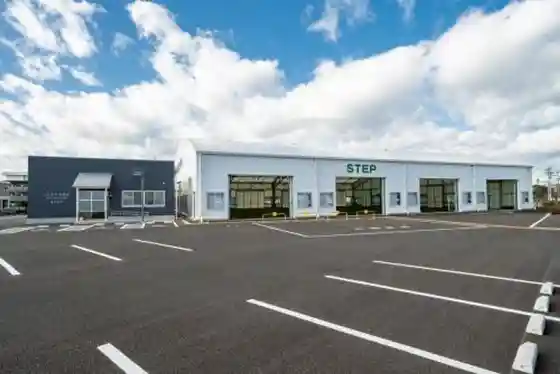
Matsushima Kamaboko Tagajo Factory
Factory visits and kamaboko tasting in Tagajo
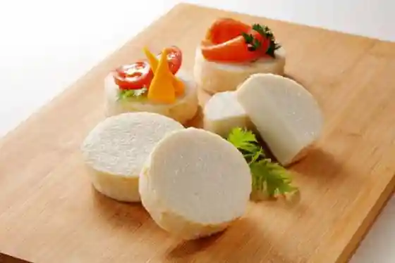
Tagajo Government Office Ruins
Nara-period provincial capital ruins — national historic site
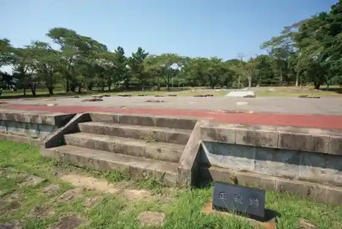
Tohoku History Museum
Prefectural museum covering Tohoku archaeology and history
Tagajo Stele
Famous inscribed stone commemorating Tagajo repairs
Kasenum
Scenic pond park on the Tagajo–Rifu border